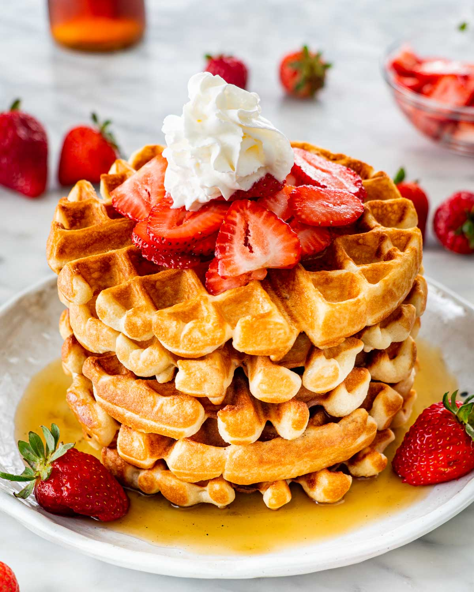

Waffles

Description
Consider this your new, go-to waffle recipe when you want to start your day off on a sweet note. No fussy steps or unexpected ingredients are required here, which means you can whip these up whenever your cravings hit.
Ingredients
- All-purpose flour
- Salt
- Baking Powder
- White Sugar
- Eggs
- Warm Milk
- Butter
- Vanilla Extract
Steps
- In a large bowl, mix together flour, salt, baking powder and sugar; set aside. Preheat waffle iron to desired temperature.
- In a separate bowl, beat the eggs. Stir in the milk, butter and vanilla. Pour the milk mixture into the flour mixture; beat until blended.
- Ladle the batter into a preheated waffle iron. Cook the waffles until golden and crisp. Serve immediately.